GAIA
a deep time planet simulator
four and a half billion years, in forty seconds
Gaia is a sandbox game that simulates the whole geological life of a planet, from birth until death. Heat leaving the core drives convection in the mantle, and that convection drags the crust around above it. The planet is modeled as a sphere paved with thousands of rock columns, each tracking its own density, temperature, thickness and age. On top of that runs a layer of surface processes. It models erosion, precipitation, and drainage that wear the rock down, carry it downhill, and lay it back down as sediment. As much as possible is simulated. The mountains are there because something pushed them up, and the sandstone is there because a river put it there.
Every world grows from a single seed, and every run tells a story. Watch a new planet unfold, hover anywhere to read the rocks beneath, nudge the sun or the mantle and see what happens, and when it's all over rewind time and replay the entire life of your planet. Or branch history and try again.
early access is free. Support on Patreon for early builds and help make
the game better.
Windows 10+, 64-bit · no installer? grab the
portable ZIP
what's actually running underneath
- Core & dynamoThe core cools and the magnetic field it drives can falter, reverse, and finally die.
- Mantle convectionUpwellings, downwellings and plumes over hot spots that sit on the core-mantle boundary.
- Plate tectonicsFully emergent drift, subduction, collision, rifting, and a supercontinent cycle.
- IsostasyColumns of crust float at the height determined by density and thickness. Thicken it and it rises.
- VolcanismArc chains above subduction, hotspot island trails, flood basalts, and the occasional supereruption.
- EarthquakesTension is calculated on every cell so earthquakes and slips can be modeled.
- ClimateSunlight, the carbon cycle and ice-albedo feedback. Build a snowball or a runaway greenhouse Venus.
- Wind & rainPrevailing winds carry moisture inland, mountains wring it out, and deserts form in the shadow behind them.
- ErosionGlacial, river, hillslope and chemical erosion models. Each leaving its own mark.
- RiversDrainage networks find their way downhill, cut valleys as they go, and build deltas where they reach the sea.
- Ice & sea levelGlaciers gain and lose mass, and the water they lock up drops the sea everywhere else in the world.
- The rock recordSediment hardens into stone, granite is unroofed by erosion, buried rock cooks into gneiss. It reads like real stratigraphy.
View lots of different data layers and visualizations of the world while it runs. This is Ashdra a 4.3 billion years old earth like planet.
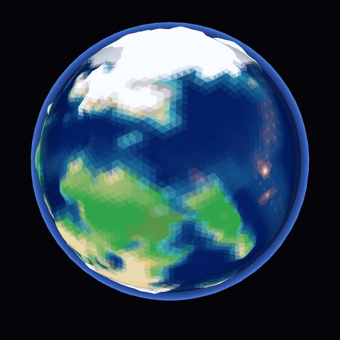
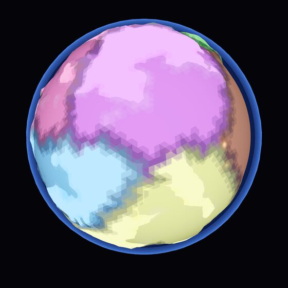
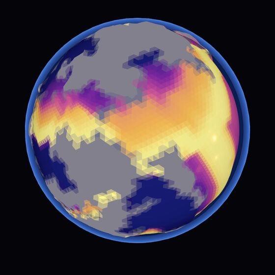
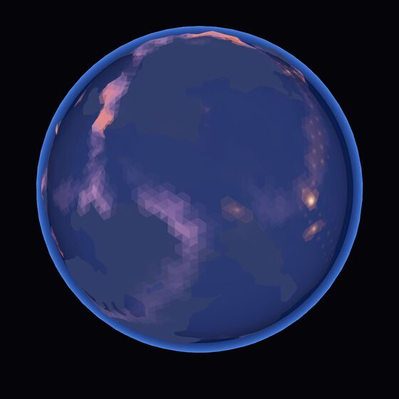
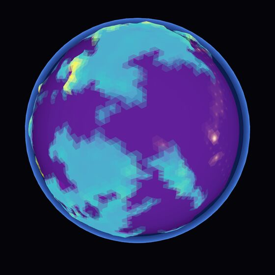
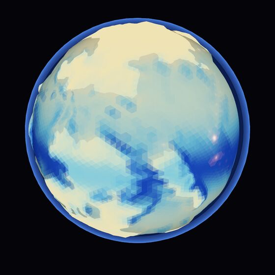
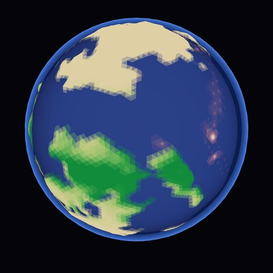
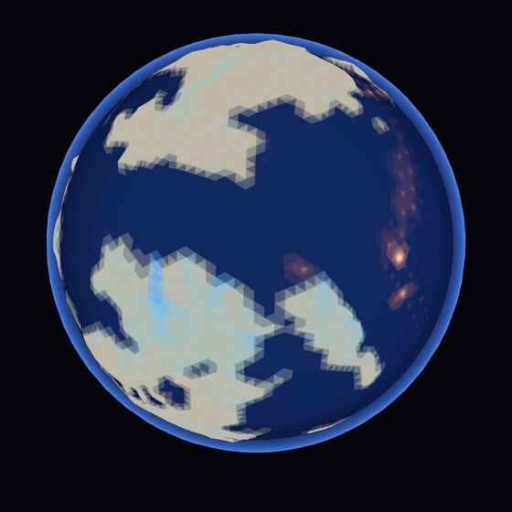
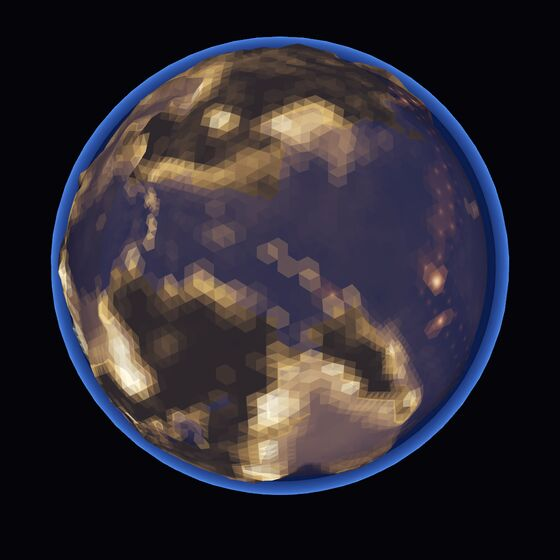
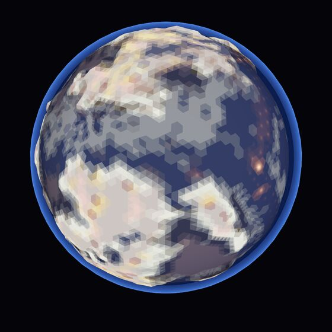
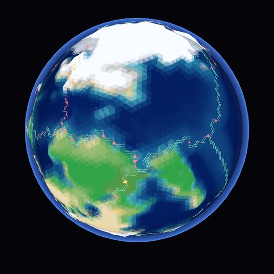
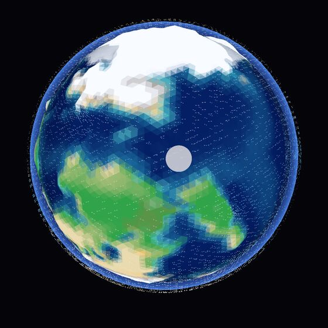
and you can peel the whole thing open, layer by layer, to the core.
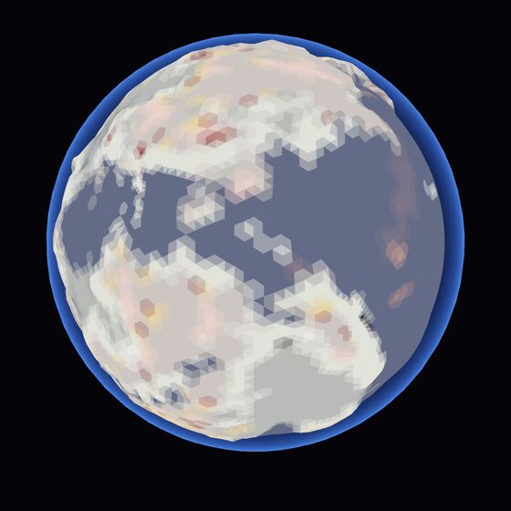
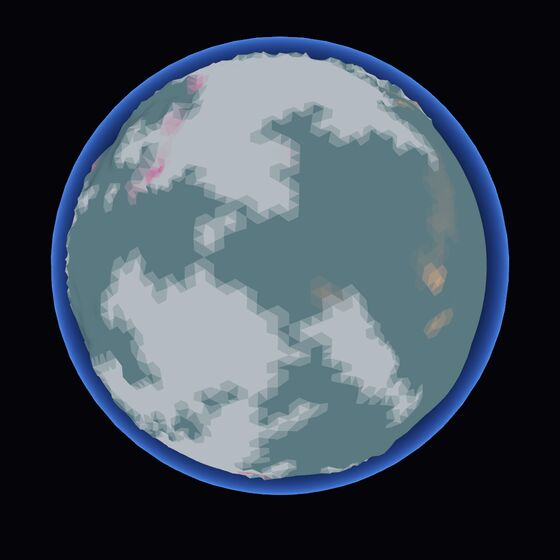
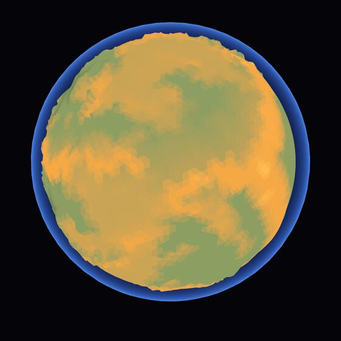
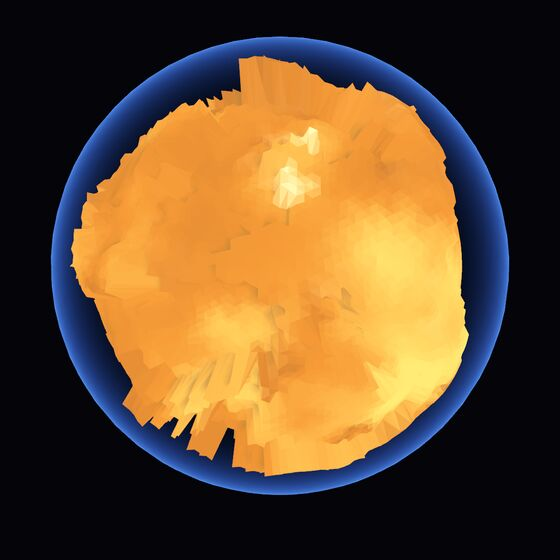
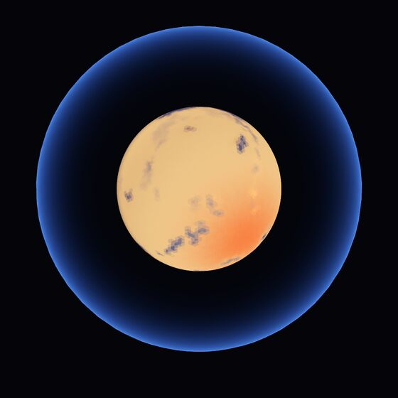
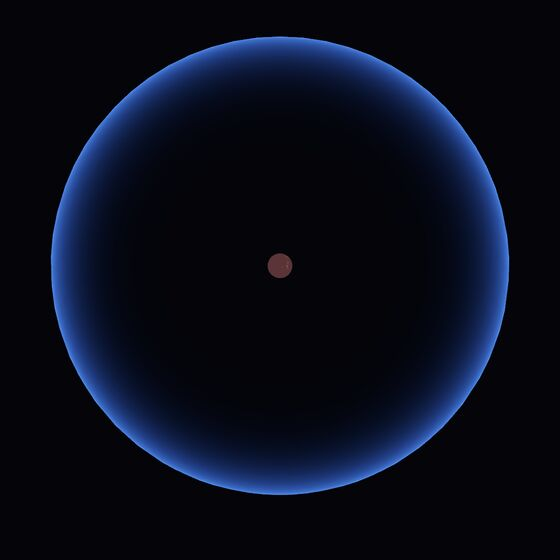
and every world has life history with a narrative driven by eventual mantle cooling.
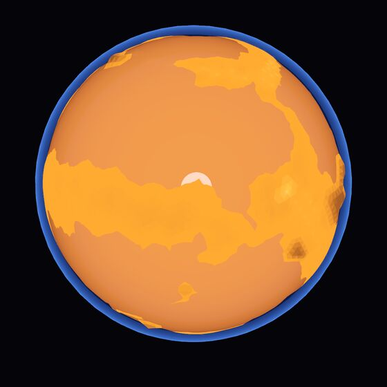
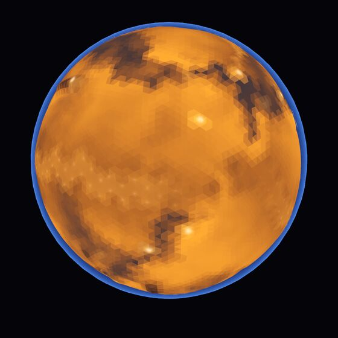
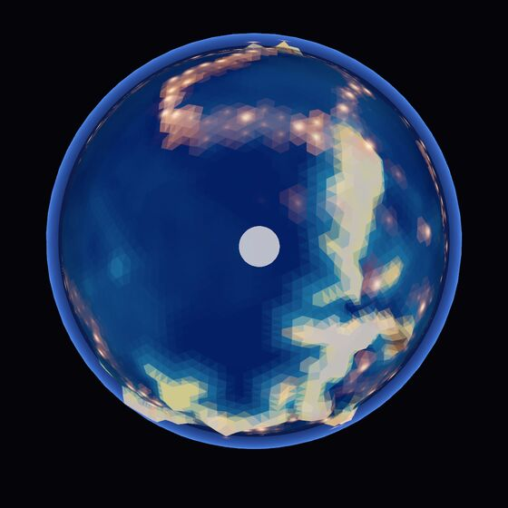
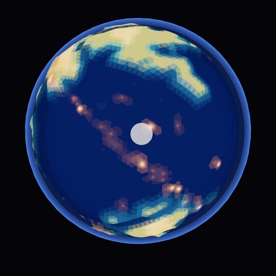
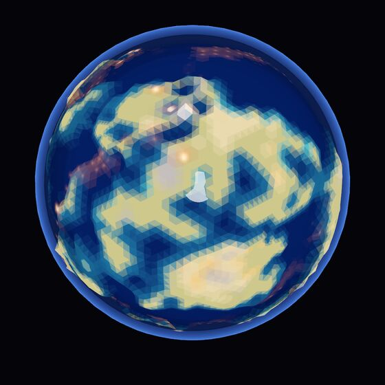
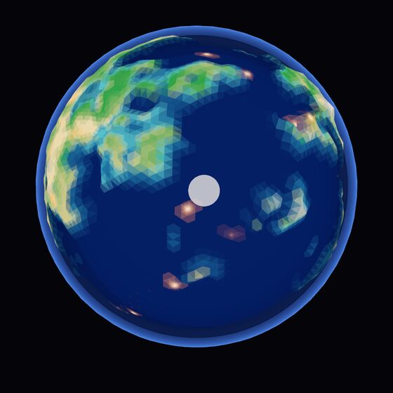
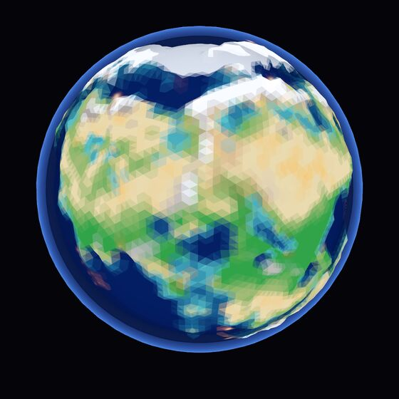
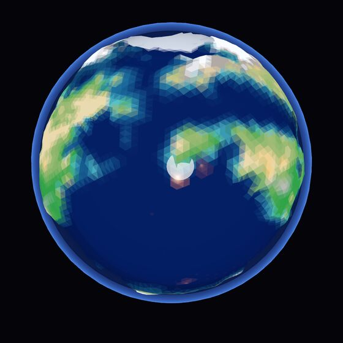
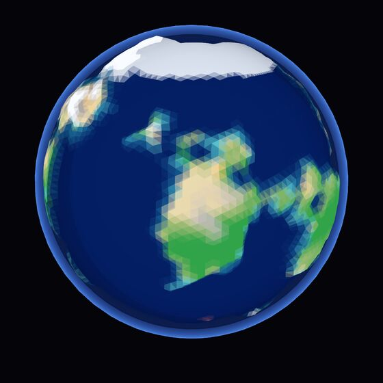